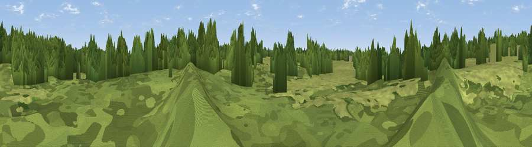

Viewpoint near Rudgwick
#46130 in England · top 97% of its area beats it · near Rudgwick · footpathWhere it is
The exact computed spot (TQ 09421 32728). Click the marker for map links.
Public access: a public right of way passes within 17 m of this spot. Computed from Natural England's CRoW access layer and OpenStreetMap rights of way — not the legal definitive map. Always verify locally.
The view, rendered

A 360° render of this exact spot computed from the terrain model, tree cover and land cover — summer colours, afternoon light, calibrated against photographs of famous viewpoints. Real trees, hedges and buildings will differ in detail.
The panorama
Grey silhouette: terrain skyline in each direction (720 bearings, Earth curvature and refraction included). Dashed green: skyline with trees (+15 m) and buildings (+8 m) as obstacles. Blue strip: how far the ground is visible on each bearing.
Where the view opens
Wedge length = distance to the farthest visible ground on that bearing (vegetation-aware). Rings at 10, 25 and 50 km.
What fills the view
50% woodland · 49% grassland
Angular shares of the visible panorama (visual magnitude), not map area. Landscape diversity 0.31 (0–1 Shannon).
Key numbers
More beautiful places nearby
The staircase of upgrades: each row has a higher view potential than everything closer. Driving times are estimates from straight-line distance, calibrated against real road routing — check an actual route before setting out.
| Place | Direction | Drive | Score |
|---|---|---|---|
| Viewpoint near Rudgwick | NW · 2 km | ~6 min | 24.8 |
| Viewpoint near Slinfold | ENE · 3 km | ~7 min | 28.2 |
| Viewpoint near Five Oaks | S · 4 km | ~10 min | 29.9 |
| Sharpenhurst Hill | SE · 6 km | ~13 min | 46.1 |
| Viewpoint near Kingsfold | ENE · 8 km | ~16 min | 55.0 |
| Pitch Hill | N · 10 km | ~19 min | 64.4 |
| Viewpoint near Holmbury St Mary | N · 10 km | ~20 min | 67.0 |
| Viewpoint near Coldharbour | NNE · 12 km | ~22 min | 70.0 |
51.08345, -0.43921 · source: osm viewpoint · position refined by local search. Computed location — check access rights before visiting.